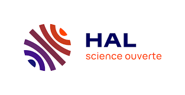

.png)
.png)
Challenges Scientifiques et Collaboration
Polyrecherche facilite la collaboration et le partage d'informations entre ces chercheurs, en offrant une plateforme où ils peuvent publier et accéder à des travaux de recherche, participer à des projets collaboratifs, et suivre les évolutions dans leur domaine respectif.
Gestion et Visualisation des Publications
Polyrecherche va plus loin en automatisant la collecte de ces publications, en construisant des graphes de citations (indiquant quels articles citent quels autres articles) et en fournissant des tableaux de bord statistiques. Ces outils permettent d'avoir une vue d'ensemble de l'activité de recherche, tant au niveau du laboratoire qu'au niveau individuel.
Bibliométrie et Analyse de Données
Notre plateforme offre des fonctionnalités avancées de bibliométrie, permettant de récupérer automatiquement les publications des chercheurs, de construire des graphes de citations, et d'analyser comment les travaux sont cités au fil du temps. Avec un volume de données pouvant atteindre 200 articles et 8000 citations.

Fonctionnalités Clés
Publiez et accédez à des articles scientifiques, des thèses, et d'autres types de travaux de recherche.Collaborez avec d'autres chercheurs à travers des projets de recherche partagés.Visualisez des graphes de citations et des tableaux de bord statistiques pour analyser les tendances de recherche. Trouver des publications pertinentes. Créez et gérez votre profil de chercheur, incluant vos publications et vos projets.
Qu'est-ce que la bibliométrie ?
Selon l'Académie des Sciences, « on entend généralement par bibliométrie, mais il vaudrait mieux dire évaluation bibliométrique, l'ensemble des procédures qui contribuent à l'évaluation de la production scientifique d’un chercheur (ou d’un ensemble de chercheurs) :
- à partir du nombre de ses publications,
- à partir du prestige des revues dans lesquelles elles ont été faites,
- à partir des citations auxquelles elles ont donné lieu.
En tout état de cause, la bibliométrie ne mesure pas la qualité d’un chercheur mais seulement ses citations, sans préjuger des raisons qui l’ont amené à être cité. »
Outils d'analyse bibliométriques
Pour calculer les indicateurs bibliométriques, des outils recensent les publications scientifiques et leurs citations (émises et reçues). Gérés par des sociétés commerciales, certains d’entre eux ne sont accessibles que sur abonnement. Malgré des évolutions constantes, ils rencontrent tous des limites qui peuvent être :
- une couverture des publications scientifiques partielle (les sciences humaines et sociales y sont moins représentées) et parfois inconnue
- des doublons dans les références bibliographiques
- une prise en compte de toutes les citations, sans niveau de valeur (non-exclusion des auto-citations ; citations négatives...)
- l’absence de prise en compte de la qualité des articles, que seule l’évaluation par les pairs permet de connaître, et des autres aspects de l’activité de recherche, comme l’enseignement, qui permettraient d’obtenir une évaluation fiable du chercheur.
Les deux bases principales sont :
-
HAL : HAL (Hyper Articles en Ligne) est une archive ouverte pluridisciplinaire destinée au dépôt et à la diffusion d'articles scientifiques de niveau recherche, publiés ou non, et de thèses, émanant des établissements d’enseignement et de recherche français ou étrangers, des laboratoires publics ou privés. HAL garantit la pérennité des documents déposés et assure une visibilité internationale aux travaux de recherche.
 -
Google Scholar : Google Scholar utilise la puissance du moteur du même nom pour indexer et dépouiller les articles scientifiques présents sur le Web. Simple d’utilisation et gratuit, sa couverture des publications est inconnue : cet outil est à utiliser avec précaution.
Équipe de Réalisation
- RAHOU Zakaria
- SBAI Sami
- DAHMANE Ibtissam
- IDDOUCH Ikram
- LIN Mathieu
- MAKBOUL Ottman
.png)